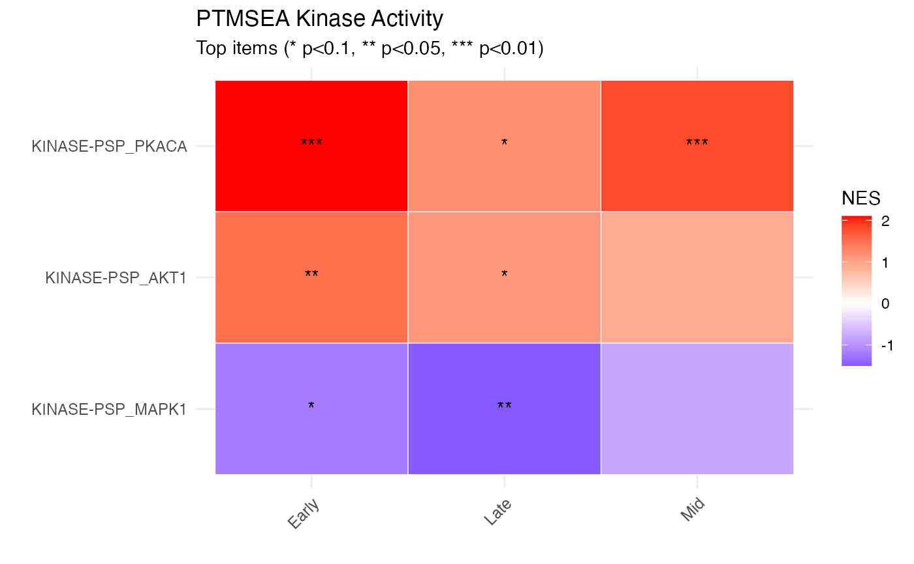
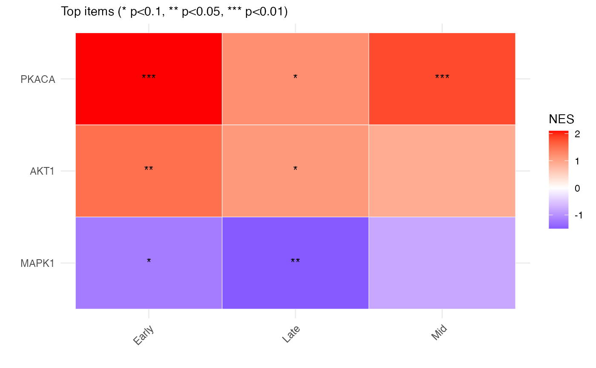

Create NES heatmap for top items across contrasts
Source:R/enrichment_visualization.R
plot_enrichment_heatmap.RdCreate NES heatmap for top items across contrasts
Usage
plot_enrichment_heatmap(
data,
item_col = "ID",
fdr_col = "p.adjust",
fdr_filter = 0.15,
n_top = 25,
item_label_col = NULL,
title = NULL,
subtitle = NULL
)Arguments
- data
Data frame with columns: item (ID/kinase), NES, p.adjust/FDR, contrast
- item_col
Name of item column (default: "ID")
- fdr_col
Name of FDR column (default: "p.adjust")
- fdr_filter
FDR threshold for selecting top items (default: 0.15)
- n_top
Number of top items to show (default: 25)
- item_label_col
Optional column for shorter labels (default: NULL, uses item_col)
- title
Plot title
- subtitle
Plot subtitle
Examples
# PTMSEA results across multiple contrasts
ptmsea_results <- data.frame(
ID = rep(c("KINASE-PSP_PKACA", "KINASE-PSP_AKT1", "KINASE-PSP_MAPK1"), 3),
NES = c(2.1, 1.5, -1.2, 1.8, 0.9, -0.8, 1.2, 1.1, -1.5),
p.adjust = c(0.001, 0.02, 0.05, 0.005, 0.12, 0.18, 0.08, 0.09, 0.03),
contrast = rep(c("Early", "Mid", "Late"), each = 3)
)
plot_enrichment_heatmap(ptmsea_results, n_top = 3,
title = "PTMSEA Kinase Activity")

# With custom item labels (shorter names)
ptmsea_results$short_name <- gsub("KINASE-PSP_", "", ptmsea_results$ID)
plot_enrichment_heatmap(ptmsea_results, item_label_col = "short_name")
